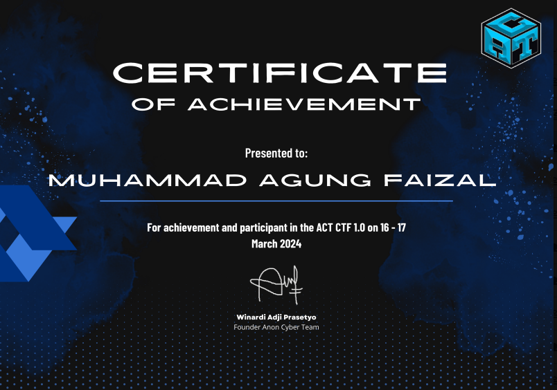

Dokumentasi ini merupakan Proof of Concept (PoC) dan write-up resmi penyelesaian berbagai kategori tantangan dalam kompetisi ACT CTF 1.0 oleh tim ACT_JAWA BARAT_RegJaBarCTF Team2 yang dipimpin oleh Muhammad Agung Faizal bersama rekan tim (Muhammad Nur dan Azri Muhammad).
1. Web Exploitation: Web Cloner
Web Exploitation — Challenge: Web Cloner Machine
Diberikan layanan web clone di http://103.176.79.161:10001/ dengan petunjuk lokasi flag pada path flag/flag.txt. Mekanisme aplikasi dirancang untuk mengunduh ("mengkloning") halaman web eksternal berdasarkan input URI dari pengguna.
Vulnerability Analysis & Exploitation:
Aplikasi mengalami kerentanan Arbitrary File Read / Local File Inclusion (LFI) akibat tidak adanya validasi skema URI. Parser backend menerima skema file lokal (file://) sebagai input yang valid, sehingga penyerang dapat membaca file langsung dari sistem berkas server tanpa batas direktori.
file:///flag.txtDengan memasukkan payload tersebut ke dalam form input clone, server membaca dan menampilkan konten flag.txt secara langsung.
2. Reverse Engineering: Rustverse Engineer
Reverse Engineering — Challenge: Rustverse
Peserta diberikan file biner bernama rustverse yang dikompilasi menggunakan bahasa pemrograman Rust. Target tantangan adalah menganalisis struktur biner dan menemukan flag rahasia yang tersimpan di dalamnya.
Analysis & Extraction:
Meskipun Rust memiliki sistem keamanan memori yang ketat (*memory-safe*), pengembang sering kali melakukan kesalahan fatal dengan menyimpan kredensial atau string sensitif langsung sebagai konstanta/variabel statis tanpa enkripsi (*hardcoded plain-text*).
# Analisis strings di lingkungan Linux/WSL:
strings rustverse | grep -i "ACT_CTF"
# Atau inspeksi langsung string buffer pada binary viewer:
Find: "ACT_CTF"3. Digital Forensics: Secret Message
Digital Forensics — Challenge: Secret Message (gambarsus.png)
Tantangan menyediakan file gambar kucing berformat PNG (gambarsus.png). Analisis visual awal tidak menunjukkan keanehan, namun ukuran biner mengindikasikan adanya payload data tambahan.
Step 1: Binary Carving dengan Binwalk
Menggunakan binwalk, ditemukan arsip ZIP tersembunyi yang disematkan di dalam biner PNG:
binwalk -e gambarsus.png
# Hasil ekstraksi memunculkan 8 file gambar:
# Warna-1.png, Warna-2.png, ..., Warna-8.png
Step 2: Inspeksi PNG Chunk Palette (PLTE)
Setiap gambar memiliki chunk PLTE (Indexed Palette) yang menyimpan entri warna khusus. Menggunakan pngcheck -v, kami mengidentifikasi nilai Hex RGB yang disematkan pada setiap palette:
pngcheck -v Warna-1.png
# chunk PLTE at offset 0x00025: (0x41, 0x43, 0x54) -> ASCII: 'A', 'C', 'T'Dengan mengekstrak nilai RGB pada semua file gambar (1 s.d. 8) dan mengonversinya ke karakter UTF-8:
Warna-1.png:0x41, 0x43, 0x54→ACTWarna-2.png:_ C TWarna-3.png:{ kWarna-4.png:0 KWarna-5.png:_ a n dWarna-6.png:4 _ jWarna-7.png:A G 0Warna-8.png:! ! }
4. Cryptography: r013tan
Cryptography — Challenge: r013tan
Diberikan ciphertext: NPG_PGS{2_F1aT1VVG}. Judul soal "r013tan" merupakan petunjuk fonetik untuk algoritma ROT13 (Caesar Cipher dengan pergeseran kunci $k = 13$).
import codecs
ciphertext = "NPG_PGS{2_F1aT1VVG}"
print(codecs.decode(ciphertext, 'rot_13'))
# Output: ACT_CTF{2_S1nG1IIT}5. Cryptography: Blublubblublublublub
Esoteric Programming — Challenge: Blublubblublublublub
Diberikan instruksi acak berupa kombinasi huruf xxccdd... dengan petunjuk "Ikan Mati". Terjemahan bahasa Inggris dari "Ikan Mati" adalah Deadfish, sebuah bahasa pemrograman esoterik (*esolang*) yang menggunakan satu sel memori dengan 4 operasi dasar:
i: Menambah sel (+1)d: Mengurangi sel (-1)s: Mengkuadratkan nilai sel (^2)o: Menampilkan output karakter
Menggunakan parser Deadfish interpreter dengan format keluaran ASCII Characters, program menghasilkan pesan tersembunyi:
6. OSINT: Catch skrip Kiddies
OSINT — Challenge: Catch skrip Kiddies
Tantangan menugaskan peserta melacak aktivitas dan artefak backdoor seorang threat actor dengan alias PocongGelinding.
Investigation Steps:
-
Username Enumeration: Menggunakan tool OSINT
whatsmyname.appuntuk memetakan keberadaan akunPocongGelindingdi berbagai platform publik. Ditemukan repositori GitHub aktif. -
Analisis Repositori: Memeriksa repositori
PocongGelinding/Backdoor. Pada file README terdapat string Base64 yang ternyata hanya merupakan pengalih perhatian (*troll/distraction*). - Git Commit History Inspection: Penyerang sering kali menghapus kunci rahasia pada commit terakhir, namun jejaknya tetap tersimpan permanen di histori commit Git. Memeriksa riwayat commit (Commit Activity) memunculkan commit diff penghapusan flag:
Commit: PocongGelinding committed last week
Action: Delete ACT_CTF{Jejak_digital_itu_nyata}7. Steganography & Misc Solutions
Steganography — Find me if you can:
File gambar Spider-Man (hackids_stegano.jpg) diekstrak menggunakan perintah binwalk -e. Ditemukan arsip RAR tersembunyi berisi file teks dengan isi:
Misc — Profesional CTF Player (Sanity Check):
Disediakan file sanity.png yang memuat kode QR berpola khusus. Dilakukan pemindaian barcode/QR reader optik menggunakan perangkat Android:
Certificate & Event Verification
Dokumentasi resmi sertifikat kompetisi ACT CTF 1.0 perwakilan Jawa Barat (RegJaBarCTF Team2):
